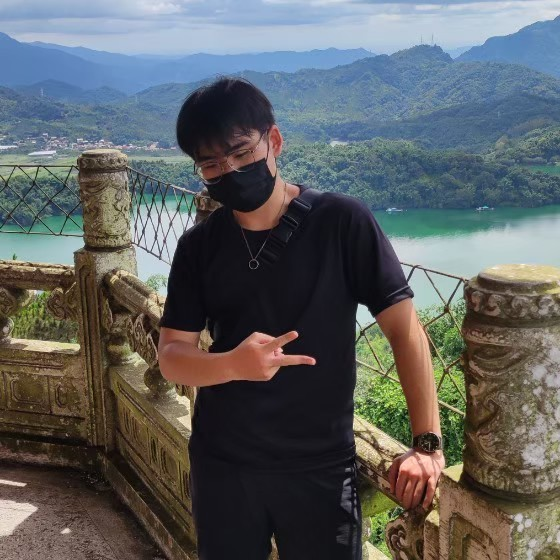

ABOUT
從第一次背著相機走上山徑開始，我就愛上了台灣山岳的樣貌：清晨的雲海、稜線上的金光、森林裡的霧。
我用照片與 YouTube 旅遊 VLOG 記錄每一次戶外足跡，也把喜歡的風景做成手作明信片，希望更多人看見這座島嶼的壯闊與溫柔。
GALLERY
可左右滑動或拖曳，點擊可放大。更多作品請至 Instagram
MAP
綠色是我去過的縣市，點擊即可放大，查看我在當地發布的貼文與旅行影片。
地圖載入中…
點擊地圖上的綠色縣市，或直接選擇：
可左右滑動或拖曳，點擊卡片即前往原本的 Instagram 貼文、Reels 或 YouTube 影片。
POSTCARDS
把山的樣子寄給想念的人。每張皆為實拍作品，手作印製。
CONTACT
合作邀約、攝影授權、明信片訂購，歡迎來信或私訊。